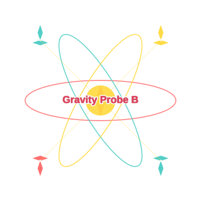

<header>
  <header>
  
  
  <nav>
    <a href="index.html" style="text-decoration: none;">
      <button style="cursor: pointer;">Home</button>
    </a>
        <a href="gravity_probe_b.html" style="text-decoration: none;">
      <button style="cursor: pointer;">Gravity Probe B</button>
    </a>
    <a href="VideoMedia.html" style="text-decoration: none;">
    <button style="cursor: pointer;">Videos</button>
    </a>
    <a href="references.html" style="text-decoration: none;">
    <button style="cursor: pointer;">References</button>
    </a>

  </nav>
</header>
